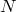

history [<number of items>]
The history command prints a list of the most recently executed commands on the terminal. The optional parameter, N, if supplied, causes only the latest  commands to be displayed.